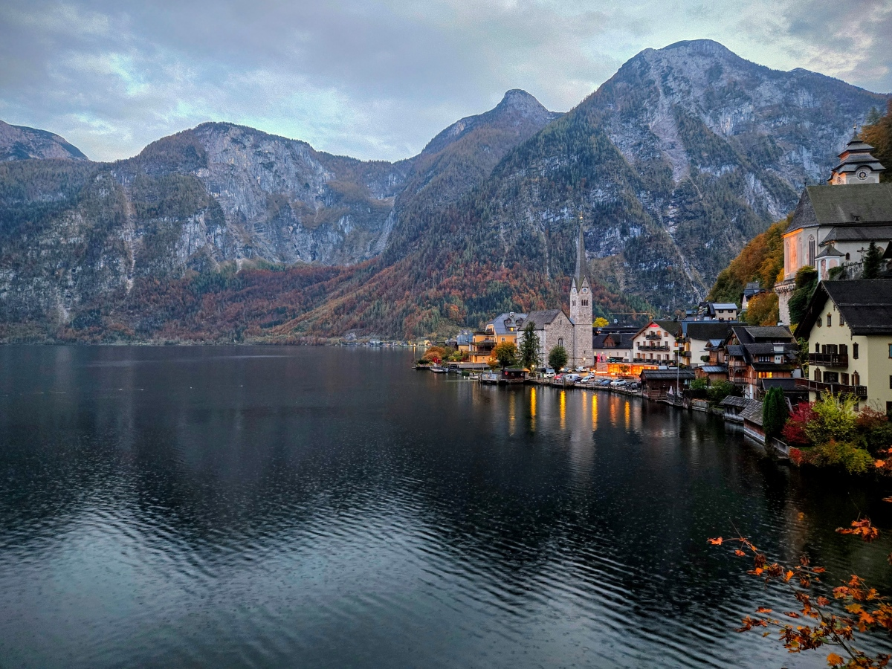
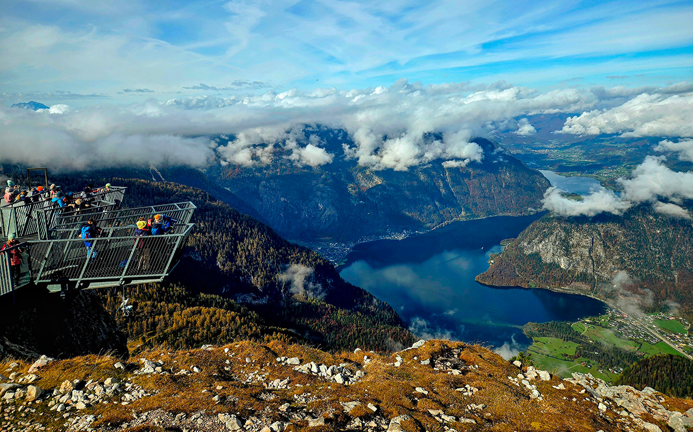
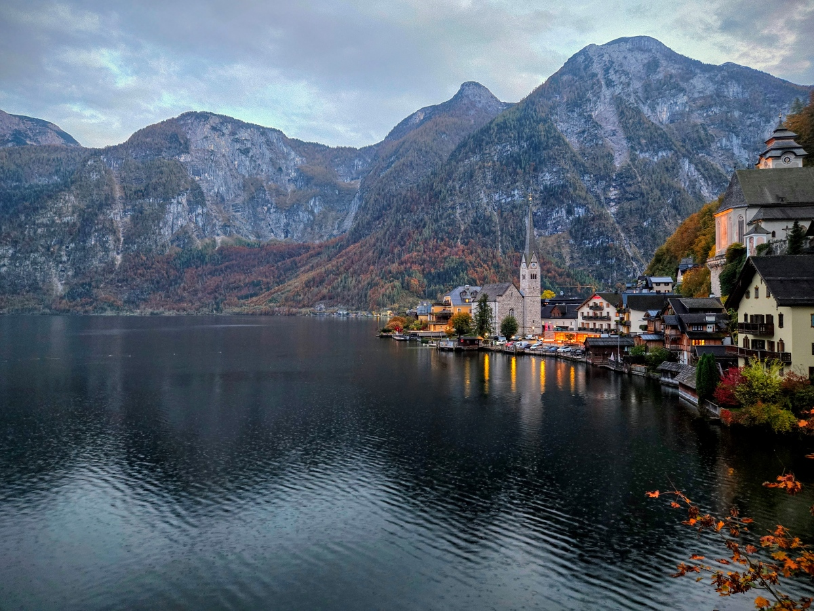
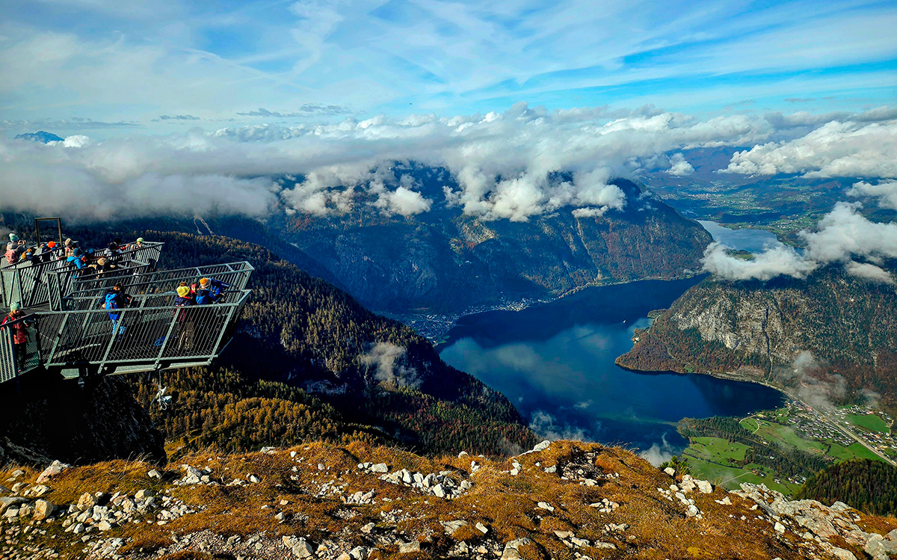
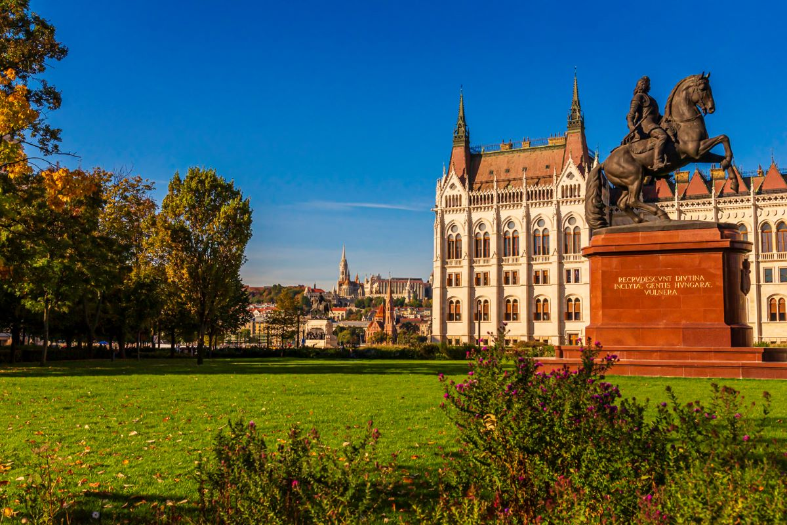
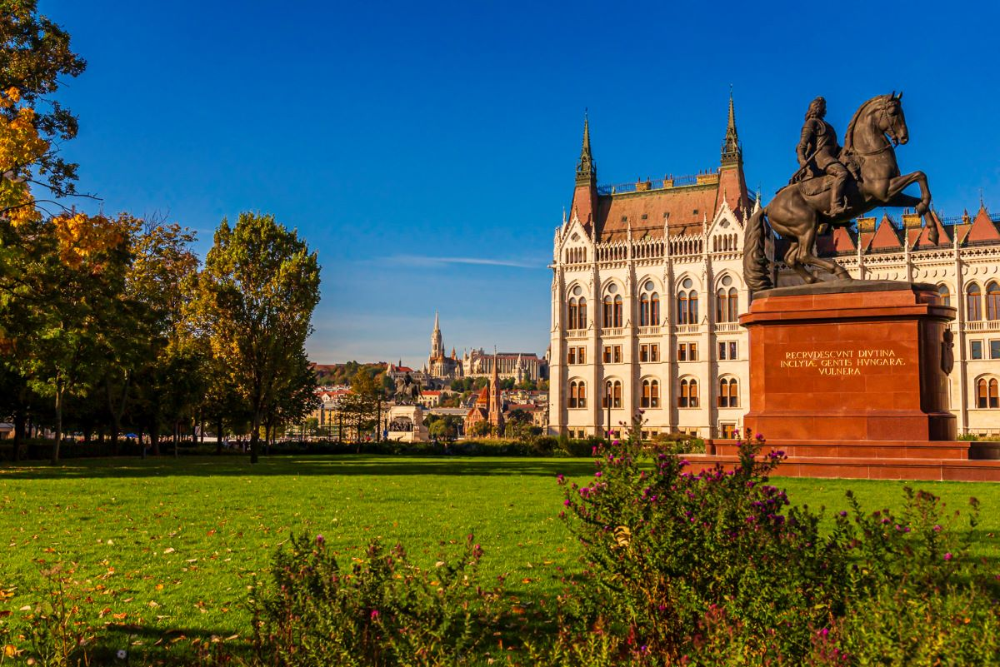

Germany: A Journey Through History, Landscapes, and Unexpected Weather
Germany is a country rich in history, breathtaking landscapes, and remarkable architecture—though the food didn’t quite meet our expectations. Typically, my wife and I travel alone, but this time, we were joined by my two sisters-in-law and brother-in-law. After landing in Munich, we picked up our rental car and embarked on an 18-day adventure. Below is a condensed itinerary highlighting key moments.
Füssen and Neuschwanstein Castle
Our first stop was Hotel Hirsch in Füssen, an ideal base for visiting Neuschwanstein Castle the following day. The castle is located near the village of Hohenschwangau (less than 2 miles away), which is also home to Hohenschwangau Castle—the childhood residence of King Ludwig II, who later commissioned Neuschwanstein. While Füssen is the closest town, Hohenschwangau serves as the main gateway to the castles, offering shops, hotels, and tourist amenities.
Arriving early, we caught the first shuttle bus to the castle. Determined to beat the crowds, I rushed toMarienbrücke (Mary’s Bridge) for an unobstructed view. This bridge offers a stunning vantage point of Neuschwanstein and its surroundings. We even hiked up a trail beyond the bridge, which rewarded us with another breathtaking perspective.
After the castle visit, we drove to Grainau, checked into our hotel, and took a short rest before heading to Partnachklamm Gorge. Carved over millions of years by the Partnach River, this natural wonder became accessible in 1912 when guide Josef Naus built a trail through its dramatic cliffs and waterfalls. The roaring water and sheer power of the gorge were mesmerizing.
Zugspitze and Lake Eibsee
After a hearty breakfast, we bid “Bis zum nächsten Mal!” to our host, Christian, and set off for Zugspitze—Germany’s highest peak at 2,962 meters (9,718 feet). Unfortunately, snowy, overcast weather dashed our hopes of panoramic views from the summit. Undeterred, we explored Lake Eibsee, located right next to the cable car parking lot. We enjoyed a peaceful walk along its outer paths, soaking in the serene beauty—until rain cut our stroll short. We laughed it off as an “authentic” German experience.
Hallstatt, Austria – A Fairytale Escape
Situated between a peaceful lake and soaring mountains, Hallstatt is often hailed as one of the most beautiful villages in the world. Its UNESCO World Heritage status, resemblance to Arendelle from Frozen, and social media fame have made it a sought-after destination, drawing travelers eager to experience its breathtaking scenery.
We stayed in a converted mill, Waldbachsäge, which had been renovated into a modern apartment and inherited from the owner’s grandmother.
Its lakeside location provided a peaceful retreat with direct water access, where swans greeted us each morning as they foraged for fallen apples along the private boat ramp.
If your travels take you to Hallstatt, take your time—it's a gorgeous destination with plenty of nearby activities. Over two days, we explored the salt mine, ventured into the ice cave, and took in the panoramic views from the 5-Fingers lookout. While the sights were unforgettable, what truly made our visit special was where we stayed.
 



Admont Abbey Library / Viva Cruise
Packing up the car with luggage is always a chore, but once everything is in place, the excitement of the journey takes over. After chatting with our host, Josef, we set off for Admont Abbey Library in Austria—often compared to the one in Beauty and the Beast, but with a real history stretching back centuries. Founded in 1074, the abbey has long been a center for learning, following the Benedictine motto: Pray, Work, and Read.
The library, built in 1776, spans 70 meters and holds over 70,000 books on display. Remarkably, it survived a devastating fire in 1865. Inside, hidden doors, intricate ceiling frescoes, and statues of the Four Last Things stand out as key features. After finishing our visit to the abbey, we drove to Passau for the next adventure of our trip—a seven-day river cruise with Viva Cruises. Getting into Passau was easy enough, but reaching the dock for embarkation proved challenging due to traffic. Once we arrived, I dropped everyone off before tackling the next task: driving back across town to return the rental car to a local Enterprise, then taking a taxi back to the dock. Talk about stress!Then to top it off, there was damage to the front rim of the tire, just another item to worry about as I’m trying to get back in time before embarkation. I had coverage, but with my credit card, which meant I’d have to go through the claims process once I got back. Ugh!
Cruise Itinerary:
Melk, Austria → Esztergom, Hungary → Budapest, Hungary → Bratislava, Slovakia → Vienna, Austria → Linz, Austria
 


Rome & The Mediterranean
Rome never fails to impress! From the Colosseum to the pasta and wine, our trip was nothing short of fun and an exploration of the best that Rome has to offer. Once we finished up our 3 days, we headed to the ship dock for our 10-day cruise.

Ireland
Ireland’s stunning landscapes and warm hospitality made our trip extra special. The Cliffs of Moher were breathtaking, and our drive along the Wild Atlantic Way gave us some of the best views in the world.